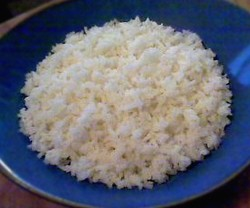

How to make a perfect rice pilaf in a skillet with white basmati rice
Ingredients for about 6 servings:
- 2 tbsp butter
- 2 tbsp vegatble oil
- 1/2 yellow onion, finely diced (consider doubling down on the onions for future use, the carmelizing process takes a while)
- 2 cups white long grain rice
- 3 cups cold of good quality chicken stock or broth (or water if you must)
- 1 1/2 tsp salt
- pinch of saffron (optional)
- pinch of cayenne
- Start off by heating a sauce pan to a low heat with butter and oil, and add oinions and cover. Heat slowly for at least 45 minutes until the onions are carmelized and the butter is browned.
- After about 30 minutes, as the onions are carmelizing, thoroughly? rince the rice and then soak in cold water for about 10 minutes (until you feel the grains break when you pinch them between your fingernails, do not oversoak?)
- Once the onions are carmelized, remove the lid to stirr in the rice and raise heat to medium. Then stir-fry for about 13 minutes(until when?)
- Add the chicken broth with the saffron and salt (not too much of either) and lower the heat to simmer, then add lid and let simmer for about 12 minutes, then remove from heat and let stand for another 15 minutes